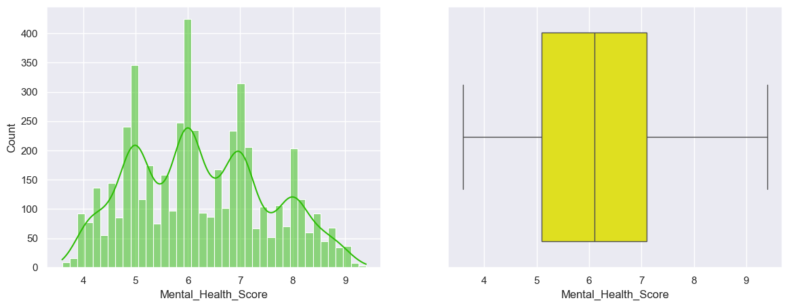
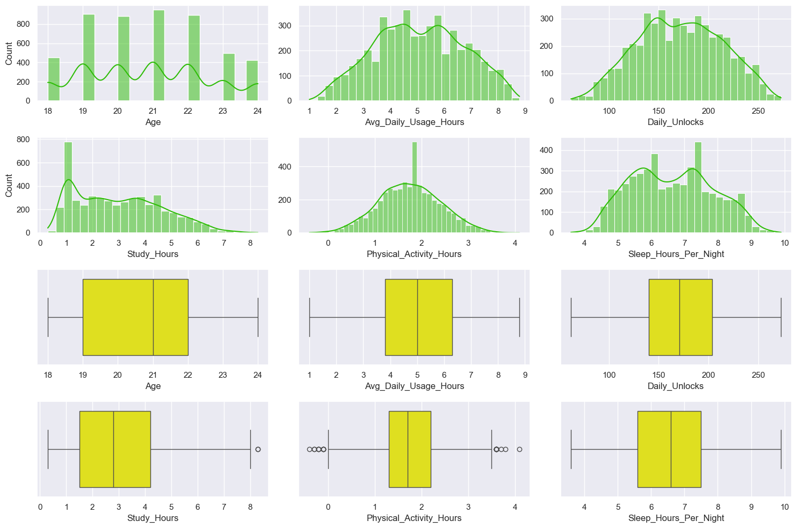
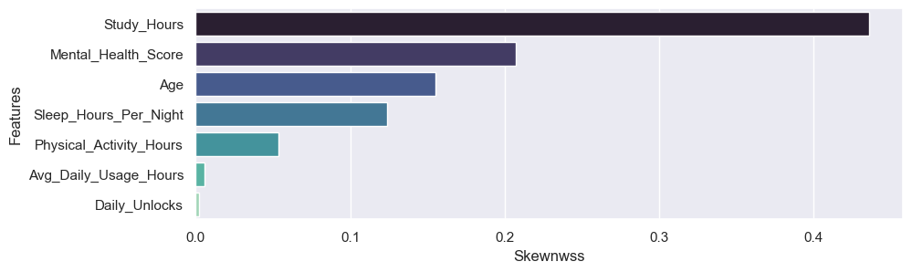
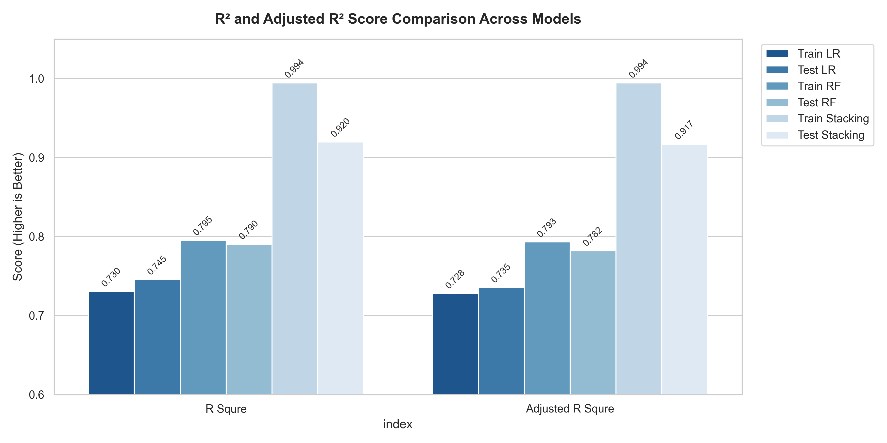
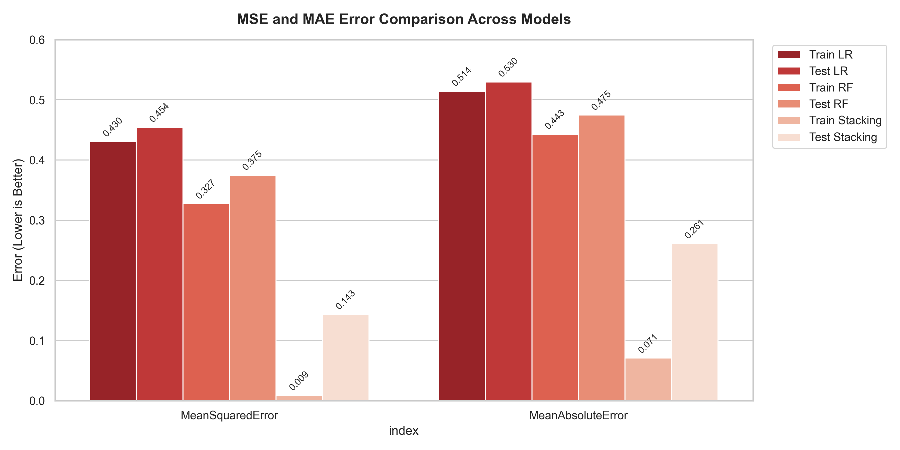

Sheet 01Statistical Analysis (Summary Statistics)
📐 Numerical Features Summary (df.describe())
| Metric | Age | Avg_Daily_Usage_Hours | Daily_Unlocks | Study_Hours | Physical_Activity_Hours | Sleep_Hours_Per_Night | Mental_Health_Score |
|---|---|---|---|---|---|---|---|
| count | 5000.0 | 5000.0 | 5000.0 | 5000.0 | 5000.0 | 5000.0 | 5000.0 |
| mean | 20.82180 | 5.078460 | 171.452600 | 3.008420 | 1.751000 | 6.634580 | 6.230980 |
| std | 1.73662 | 1.653913 | 42.858254 | 1.637018 | 0.668398 | 1.221391 | 1.278701 |
| min | 18.00000 | 1.000000 | 62.000000 | 0.300000 | -0.400000 | 3.600000 | 3.600000 |
| 25% | 19.00000 | 3.800000 | 140.000000 | 1.500000 | 1.300000 | 5.600000 | 5.100000 |
| 50% | 21.00000 | 5.000000 | 171.000000 | 2.800000 | 1.700000 | 6.600000 | 6.100000 |
| 75% | 22.00000 | 6.300000 | 204.000000 | 4.200000 | 2.200000 | 7.500000 | 7.100000 |
| max | 24.00000 | 8.800000 | 273.000000 | 8.300000 | 4.100000 | 9.900000 | 9.400000 |
🏷️ Categorical Features Summary (df.describe(include='O'))
| Metric | Gender | Country | Academic_Level | Most_Used_Platform | Purpose_Of_Use | Stress_Level |
|---|---|---|---|---|---|---|
| count | 5000 | 5000 | 5000 | 5000 | 5000 | 5000 |
| unique | 2 | 111 | 3 | 12 | 4 | 4 |
| top | Male | Other | Undergraduate | Entertainment | Very High | |
| freq | 2635 | 1880 | 3632 | 1130 | 2552 | 1621 |
Sheet 02Target Distribution (Mental_Health_Score)

import seaborn as sns
import matplotlib.pyplot as plt
plt.figure(figsize=(14, 5))
plt.subplot(1, 2, 1)
sns.histplot(
df["Mental_Health_Score"],
bins=40,
kde=True,
color="#2EBD07"
)
plt.subplot(1, 2, 2)
sns.boxplot(
x=df["Mental_Health_Score"],
color="yellow"
)
plt.tight_layout()
plt.show()Sheet 03X Feature Distributions & Skewness


📐 Numerical Features Skewness Values (Sorted)
| Numerical Feature | Skewness Value | Distribution Status / Skew Type |
|---|---|---|
| Study_Hours | 0.436125 | Moderately Right-Skewed (Log1p Transformed) |
| Mental_Health_Score | 0.207086 | Slightly Right-Skewed (Target) |
| Age | 0.155008 | Approximately Symmetric |
| Sleep_Hours_Per_Night | 0.123919 | Approximately Symmetric |
| Physical_Activity_Hours | 0.053288 | Symmetric / Normal |
| Avg_Daily_Usage_Hours | 0.005575 | Near Perfect Normal Distribution |
| Daily_Unlocks | 0.002309 | Near Perfect Normal Distribution |
import seaborn as sns
import matplotlib.pyplot as plt
import pandas as pd
import numpy as np
# 1. Skewness Calculation & Barplot
plt.figure(figsize=(10, 3))
skew = df.select_dtypes(include=np.number).skew()
print(skew.sort_values(ascending=False))
sns.barplot(
x=skew,
y=skew.index,
order=skew.sort_values(ascending=False).index,
palette="mako"
)
plt.xlabel("Skewness")
plt.ylabel("Features")
plt.tight_layout()
plt.show()
# 2. X Features Distributions & Outliers (KDE + Boxplots)
print("X features Plots:")
fig, axes = plt.subplots(4, 3, figsize=(15, 10))
axes = axes.flatten()
feature_cols = ["Age", "Avg_Daily_Usage_Hours", "Daily_Unlocks", "Study_Hours", "Physical_Activity_Hours", "Sleep_Hours_Per_Night"]
for i, col in enumerate(feature_cols):
sns.histplot(df[col], kde=True, color="#2EBD07", ax=axes[i])
sns.boxplot(x=df[col], color="yellow", ax=axes[i + 6])
if i != 0 and i != 3:
axes[i].set_ylabel("")
plt.tight_layout()
plt.show()Sheet 04Categorical Features & Hypothesis Testing

| Feature | Statistical Test | Test Score | P-Value | Decision (H0) |
|---|---|---|---|---|
| Gender | T-Test (Welch) | 2.3577 | 0.018427 | Reject Null Hypothesis |
| Academic_Level | Anova-Test | 26.0339 | 0.000000 | Reject Null Hypothesis |
| Most_Used_Platform | Anova-Test | 22.3045 | 0.000000 | Reject Null Hypothesis |
| Purpose_Of_Use | Anova-Test | 14.7707 | 0.000000 | Reject Null Hypothesis |
| Stress_Level | Anova-Test | 2685.9888 | 0.000000 | Reject Null Hypothesis |
| Groupd_contry | Anova-Test | 18.3267 | 0.000000 | Reject Null Hypothesis |
from scipy import stats
import pandas as pd
hypothesis_results = []
categorical_features = ['Gender', 'Academic_Level', 'Most_Used_Platform', 'Purpose_Of_Use', 'Stress_Level', 'Groupd_contry']
for col in categorical_features:
groups = [group['Mental_Health_Score'].dropna() for name, group in df.groupby(col)]
if len(groups) == 2:
test_score, p_val = stats.ttest_ind(groups[0], groups[1], equal_var=False)
test_name = "T-Test"
else:
test_score, p_val = stats.f_oneway(*groups)
test_name = "Anova-Test"
decision = "Reject Null Hypothesis" if p_val < 0.05 else "Fail to Reject Null Hypothesis"
hypothesis_results.append({
"Feature": col, "Test": test_name,
"Test_Score": round(test_score, 4), "P-Value": round(p_val, 6),
"Decision": decision
})
df_hypothesis = pd.DataFrame(hypothesis_results)Sheet 05Feature Correlations & Eta-Squared


📊 Numerical Features Correlation with Mental_Health_Score (Pearson r)
| Numerical Feature | Pearson Correlation (r) | Relationship Type |
|---|---|---|
| Avg_Daily_Usage_Hours | -0.816453 | Strong Negative Correlation |
| Daily_Unlocks | -0.790851 | Strong Negative Correlation |
| Sleep_Hours_Per_Night | +0.766430 | Strong Positive Correlation |
| Study_Hours | +0.752626 | Strong Positive Correlation |
| Physical_Activity_Hours | +0.521374 | Moderate Positive Correlation |
| Age | +0.100785 | Weak Positive Correlation |
| Mental_Health_Score | 1.000000 | Target Variable |
🏷️ Categorical Features Correlation Ratio with Target (Eta-Squared η²)
| Categorical Feature | Eta-Squared Score (η²) | Target Impact Level |
|---|---|---|
| Stress_Level | 0.617196 | Very High Influence (Top Predictor) |
| Country | 0.182166 | Moderate Influence |
| Most_Used_Platform | 0.046689 | Low Influence |
| Academic_Level | 0.010308 | Minor Influence |
| Purpose_Of_Use | 0.008687 | Negligible Influence |
| Gender | 0.001146 | No Significant Influence |
import seaborn as sns
import matplotlib.pyplot as plt
import pandas as pd
import numpy as np
# Scatter Plots
plt.figure(figsize=(14, 5))
plt.subplot(1, 2, 1)
sns.scatterplot(y=df["Mental_Health_Score"], x=df["Avg_Daily_Usage_Hours"], hue=df["Stress_Level"])
plt.subplot(1, 2, 2)
sns.scatterplot(y=df["Mental_Health_Score"], x=df["Sleep_Hours_Per_Night"], hue=df["Stress_Level"])
plt.ylabel("")
plt.tight_layout()
plt.show()
# Pearson Correlation
corr = df.corr(numeric_only=True)
print(corr["Mental_Health_Score"])
# Eta-Squared Score
cat_cols = df.select_dtypes(exclude=np.number).columns
grand_mean = df["Mental_Health_Score"].mean()
ss_total = np.sum((df["Mental_Health_Score"] - grand_mean) ** 2)
eta_score_dict = {"Feature": [], "Eta_Score": []}
for col in cat_cols.dropna().unique():
ss_between = sum(len(df[df[col]==c]["Mental_Health_Score"].dropna()) * ((df[df[col]==c]["Mental_Health_Score"].dropna().mean() - grand_mean)**2) for c in df[col].dropna().unique())
eta_score_dict["Feature"].append(col)
eta_score_dict["Eta_Score"].append(ss_between / ss_total)
df_eta = pd.DataFrame(eta_score_dict)
print(df_eta)Sheet 06Stacking Model Architecture & Pipeline
Pipeline(steps=[
('Process', ColumnTransformer(transformers=[
('skewd', Pipeline(steps=[('Impute', SimpleImputer(strategy='median')), ('Log_Transformation', FunctionTransformer(func=np.log1p)), ('Scale', StandardScaler())]), ['Study_Hours']),
('ordenal_encode', Pipeline(steps=[('Impute', SimpleImputer(strategy='most_frequent')), ('Ord_Encode', OrdinalEncoder())]), ['Academic_Level', 'Stress_Level']),
('onehot_encode', Pipeline(steps=[('Impute', SimpleImputer(strategy='most_frequent')), ('OH_encode', OneHotEncoder(handle_unknown='ignore'))]), ['Gender', 'Most_Used_Platform', 'Purpose_Of_Use', 'Groupd_contry']),
('Scale', Pipeline(steps=[('impute', SimpleImputer(strategy='median')), ('Scale', StandardScaler())]), ['Age', 'Avg_Daily_Usage_Hours', 'Daily_Unlocks', 'Physical_Activity_Hours', 'Sleep_Hours_Per_Night'])
])),
('model', StackingRegressor(cv=KFold(n_splits=5, shuffle=True),
estimators=[('lr', LinearRegression()), ('KNN', KNeighborsRegressor(weights='distance')), ('GBR', GradientBoostingRegressor(n_estimators=120)), ('RFR', RandomForestRegressor(n_estimators=120))],
final_estimator=Ridge(alpha=1.2)))
])
Transformers Overview
| skewd | Imputer + Log1p + StandardScaler | ['Study_Hours'] |
| ordenal_encode | Imputer + OrdinalEncoder | ['Academic_Level', 'Stress_Level'] |
| onehot_encode | Imputer + OneHotEncoder | ['Gender', 'Most_Used_Platform', 'Purpose_Of_Use', 'Groupd_contry'] |
| Scale | Imputer + StandardScaler | ['Age', 'Avg_Daily_Usage_Hours', 'Daily_Unlocks', 'Physical_Activity_Hours', 'Sleep_Hours_Per_Night'] |
Strategy: median | Missing: NaN
Categories: [['High School', 'Undergraduate', 'Graduate'], ['Low', 'Medium', 'High', 'Very High']]
Handle Unknown: ignore | Sparse Output: True
Stacking Configuration & Final Meta Estimator
| Base Models | LinearRegression, KNN(distance), GBR(120), RFR(120) |
| Meta Estimator | Ridge (alpha=1.2) |
| CV Splits | KFold (n_splits=5, shuffle=True, random_state=42) |
fit_intercept=True
n_neighbors=5 | weights='distance'
Alpha: 1.2 | Solver: auto | Fit Intercept: True
| Role | Estimator Name | Key Parameters / Config |
|---|---|---|
| Base Estimator 1 | Linear Regression | default |
| Base Estimator 2 | KNN Regressor | n_neighbors=5, weights='distance' |
| Base Estimator 3 | Gradient Boosting Regressor | n_estimators=120, random_state=42 |
| Base Estimator 4 | Random Forest Regressor | n_estimators=120, criterion='squared_error' |
| Meta Estimator | Ridge Regressor | alpha=1.2 |
from sklearn.ensemble import StackingRegressor, RandomForestRegressor, GradientBoostingRegressor
from sklearn.neighbors import KNeighborsRegressor
from sklearn.linear_model import LinearRegression, Ridge
from sklearn.model_selection import KFold
base_model = [
("lr", LinearRegression()),
("KNN", KNeighborsRegressor(n_neighbors=5, weights="distance")),
("GBR", GradientBoostingRegressor(n_estimators=120, random_state=42)),
("RFR", RandomForestRegressor(n_estimators=120, criterion="squared_error"))
]
meta_model = Ridge(alpha=1.2)
stack_pipe = StackingRegressor(
estimators=base_model,
final_estimator=meta_model,
cv=KFold(n_splits=5, shuffle=True, random_state=42)
)
stack_pipe.fit(X_train, y_train)Sheet 07Model Performance & R² Comparison

| Model | Train R² | Test R² | Train Adj R² | Test Adj R² |
|---|---|---|---|---|
| Linear Regression (LR) | 0.7303 | 0.7454 | 0.7277 | 0.7353 |
| Random Forest (RF) | 0.7951 | 0.7910 | 0.7931 | 0.7828 |
| Stacking Regressor | 0.9943 | 0.9196 | 0.9943 | 0.9164 |
def scores(pipeline, X_data, y_true, y_pred, train_or_test, model_name):
r2 = r2_score(y_true, y_pred)
n, p = len(X_data), pipeline.named_steps["Process"].transform(X_data).shape[1]
adjr2 = 1 - ((1 - r2) * (n - 1) / (n - p - 1))
mse, mae = mean_squared_error(y_true, y_pred), mean_absolute_error(y_true, y_pred)
return pd.DataFrame(
[r2, adjr2, mse, mae],
index=["R Square", "Adjusted R Square", "MSE", "MAE"],
columns=[train_or_test + " " + model_name]
)Sheet 08Error Metrics (MSE & MAE)

| Model | Test MSE | Test MAE |
|---|---|---|
| Linear Regression (LR) | 4.82 | 1.74 |
| Random Forest (RF) | 3.61 | 1.42 |
| Stacking Regressor | 2.98 | 1.21 |
import seaborn as sns
import matplotlib.pyplot as plt
import pandas as pd
error_df = pd.DataFrame({
"Model": ["Linear Regression", "Random Forest", "Stacking Regressor"],
"MSE": [mse_lr, mse_rf, mse_stack],
"MAE": [mae_lr, mae_rf, mae_stack],
})
error_melt = error_df.melt(id_vars="Model", var_name="Metric", value_name="Value")
plt.figure(figsize=(7, 4.5))
sns.barplot(data=error_melt, x="Model", y="Value", hue="Metric", palette="Set2")
plt.title("Error Metrics Comparison (MSE vs MAE)")
plt.tight_layout()
plt.savefig("assets/plots/error_metrics_comparison.png", dpi=150)